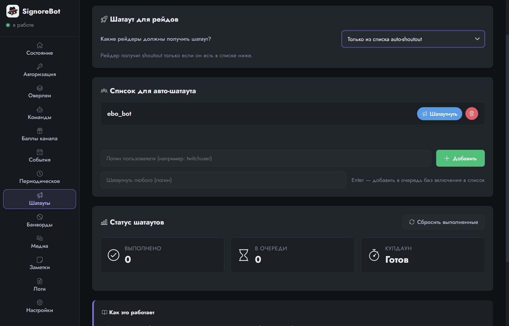

Урок 7 из 9
Автошатауты
Когда на стрим заходит знакомый стример, принято его «прошатаутить» — назвать в чате и предложить зрителям заглянуть к нему. SignoreBot умеет делать это сам, и здесь важнее не кнопки, а правила Twitch, о которых стоит знать.
Что такое шатаут
Шатаут (shoutout, «выкрик») — команда Twitch /shoutout ник. Она показывает в чате карточку канала с кнопкой «подписаться», а зрителям в приложении Twitch приходит уведомление. Делать её вручную каждый раз, когда в чат заходит друг, утомительно, поэтому бот берёт это на себя.
Список и рейды
Вкладка Шатауты. Главная часть — список для авто-шатаута: добавьте туда логины (без @). Когда человек из списка впервые за стрим напишет в чат, бот сделает шатаут. Один раз за сессию: на второе сообщение он уже не отреагирует.
Отдельно — рейды: заход в ваш чат целой аудиторией другого стримера. Выберите, кому из рейдеров положен шатаут: никому, только тем, кто в списке, только тем, кого в списке нет, или всем.

Кнопка Шатаутнуть у логина — то же самое вручную; отдельное поле ниже делает шатаут любому, кого в списке нет.
Правила Twitch, которые объясняют очередь
Twitch ограничивает шатауты, и бот эти ограничения не обходит — он их соблюдает за вас:
- Не чаще одного раза в две минуты. Отсюда кулдаун — пауза между шатаутами. Если в чат зашли трое из списка разом, они встанут в очередь и получат шатауты по одному.
- Одному каналу — не чаще раза в час. Если модератор уже прошатаутил гостя вручную, бот заметит ответ Twitch и уберёт его из очереди как выполненного, а не будет ломиться повторно.
- Только на живом стриме. Офлайн Twitch их не принимает, и бот напишет об этом в логе.
Шатаут уходит от имени канала, а не бота: право на него есть только у аккаунта стримера. Список выполненных сбрасывается при перезапуске бота или кнопкой «Сбросить выполненные», если стрим был длинный и гость заходил дважды.